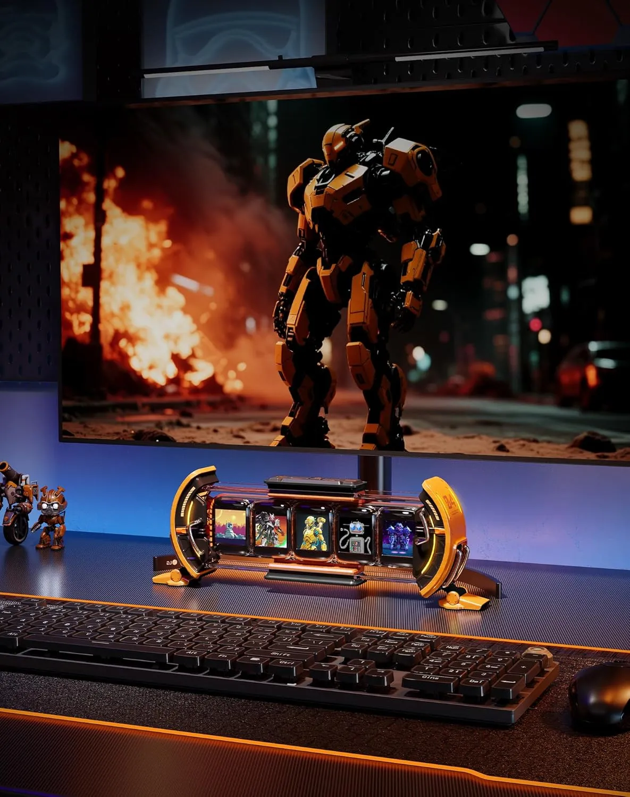
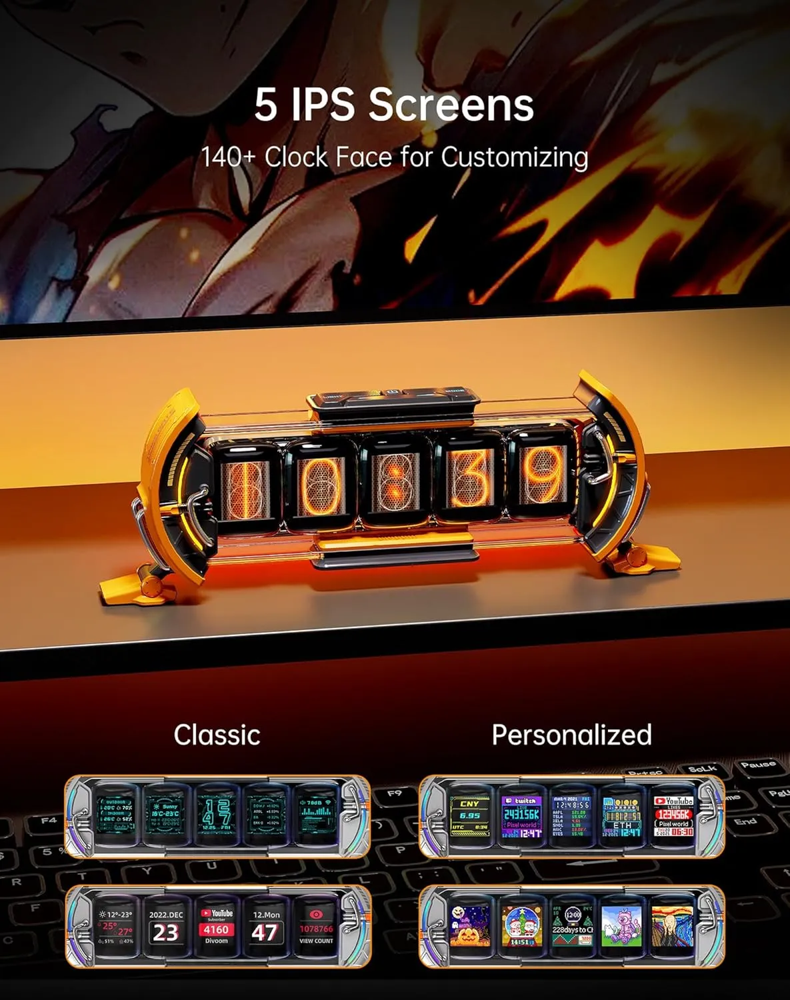
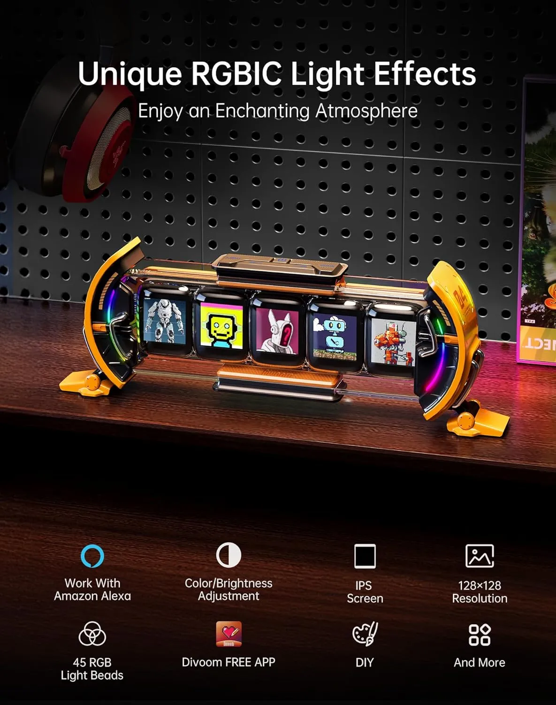
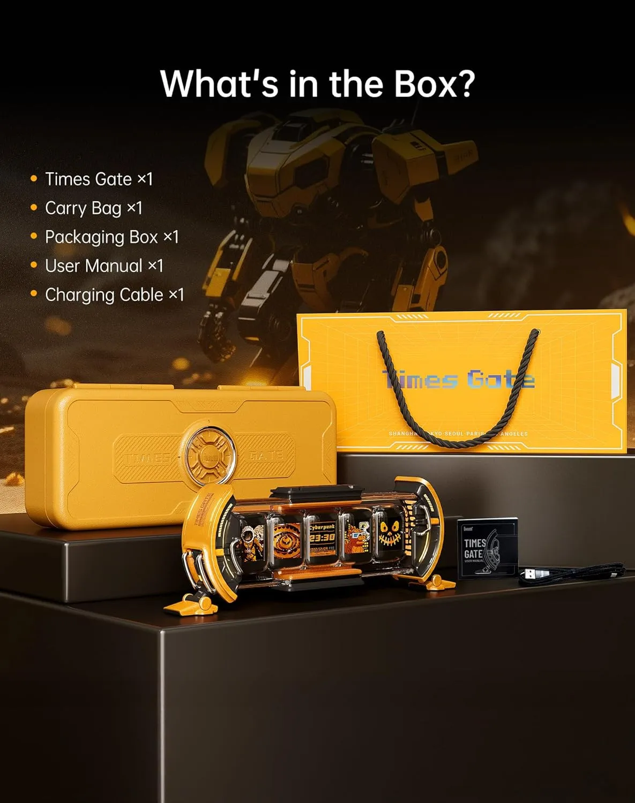
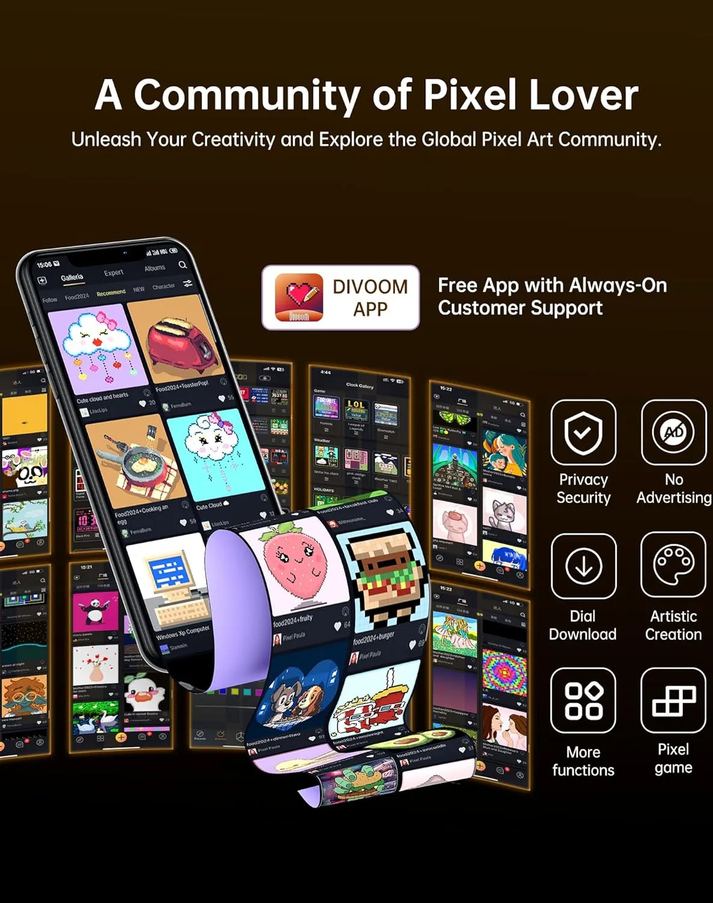
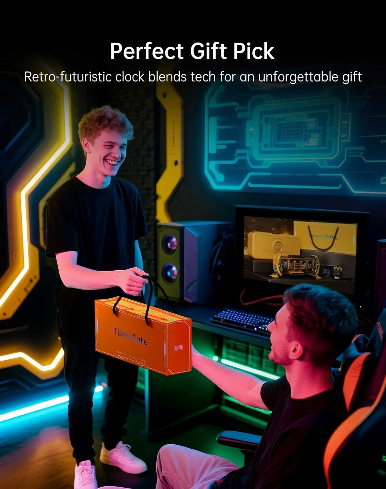

Turns the desk into a live dashboard
Five small screens create movement, color, and information instead of another silent desk object.
Divoom Times Gate turns a plain desk into a live pixel dashboard with five screens for animated art, GIFs, clocks, widgets, game-style visuals, and cyberpunk setup personality.
This is an editorial affiliate page. The product is sold on Amazon, not directly by The Merchant. Always check the live listing for current specs, colors, connection details, price, and availability.

A stand, charger, or lamp can be useful, but most accessories do not create a visual identity. Times Gate gives your setup a live focal point people immediately notice.

Five small screens create movement, color, and information instead of another silent desk object.
Product imagery highlights weather, finance, social media, smart home, and game-style widgets.
Good fit for stream backgrounds, gaming desk photos, office shelves, and short product videos.
The product is easy to understand because the value is visible instantly: five animated screens that make a setup feel more alive.
Your desk can be organized and still feel flat in photos, videos, and livestream backgrounds.
The screen cluster adds color, motion, cyberpunk energy, and instant personality.
It is specific, memorable, and visually obvious — the kind of tech object that gets noticed fast.
The product images position Times Gate around five full-color screens, classic clock faces, personalized visuals, and pixel-style display options.

The multi-panel layout is what makes it feel more like a cyberpunk dashboard than a normal clock.
Use it as desk decor, setup branding, gaming mood lighting, or a conversation piece.
It can be more than decoration when you use clock, data, and dashboard-style screens.
The product imagery highlights RGBIC light effects, IPS screen quality, app control, pixel display features, and a setup-ready display style.

Check the current Amazon listing for exact specs, connection setup, included accessories, available color, app details, price, and delivery before ordering.
The provided page notes that Times Gate uses 2.4GHz Wi‑Fi, is not Bluetooth-connected, has no built-in battery, and requires continuous power. Treat it as an always-on desk centerpiece.

The original page says the device uses Wi‑Fi for setup, app control, synchronization, and real-time data display.
Skip it if you want a battery-powered portable gadget. Buy it if you want an always-on desk display.
The image shows device, carry bag, box, manual, and cable. Verify the live listing before ordering.
Clear buying angles without fake scores, Amazon review copying, or rating-style claims.
Gives your desk a clear cyberpunk focal point instead of another invisible accessory.
Strong fit for people who like GIFs, retro visuals, and animated setup details.
Weather, clocks, counters, and widgets can make the display feel useful too.
Looks strong in setup photos, desk videos, YouTube backgrounds, and livestream shots.
Easy to understand and visually unique for pixel art fans or desk setup builders.
Not the right pick if you want a portable monitor, battery-powered device, or Bluetooth-only gadget.
Product imagery highlights the Divoom app, pixel art community, downloads, privacy/security framing, and artistic creation.

The product image highlights a free app, so app control is central to the user experience.
Good for people who want their desk display to change with moods, themes, and creative visuals.
Before buying, verify current app requirements, compatibility, and setup notes on Amazon.
Times Gate has a strong gift angle because it looks specific, futuristic, and instantly understandable.

Simple shopping guidance before clicking through.
It is a cyberpunk-style smart desk display with five screens for pixel art, GIFs, clocks, widgets, and live visual information.
The original page says Times Gate uses 2.4GHz Wi‑Fi for setup, app control, synchronization, and real-time data display. It is not Bluetooth-connected.
The original page says it has no built-in battery and requires continuous power, so it is best treated as an always-on desk display.
Check current price, delivery, available colors, included accessories, connection requirements, app compatibility, return policy, and Amazon availability.
View the live Amazon listing for current price, specs, app details, accessories, color options, and availability before ordering.